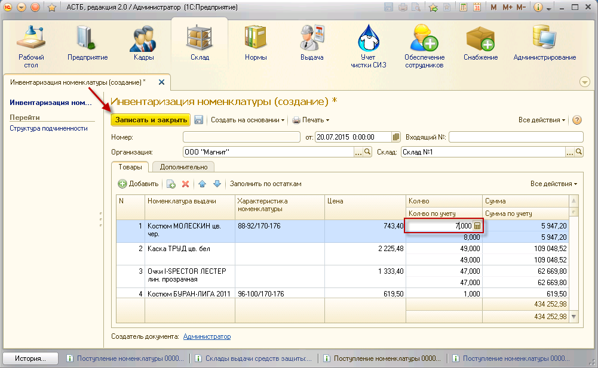

Для проведения инвентаризации необходимо зайти в раздел «Склад», документ «Инвентаризация номенклатуры». Для добавления нового документа нажмите кнопку «Создать». В открывшемся окне выберите организацию и склад, на котором проводится инвентаризация. Далее нажмите кнопку «Заполнить по остаткам».
Таблица заполнится остатками товаров на складе. Если при проведении инвентаризации обнаружено, что количество по учету не совпадает с реальным количеством, необходимо изменить значение в колонке «Количество». После сверки всех данных необходимо нажать кнопку «Записать и закрыть».
